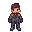
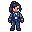
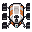
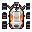
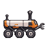

Revisión local de los recursos solicitados. PNG transparentes; los astronautas y Vega se conservaron intactos. Ampliación por vecino más cercano. Estas vistas no prueban integración en Unity.





Informe y limitaciones · Manifiesto de archivos